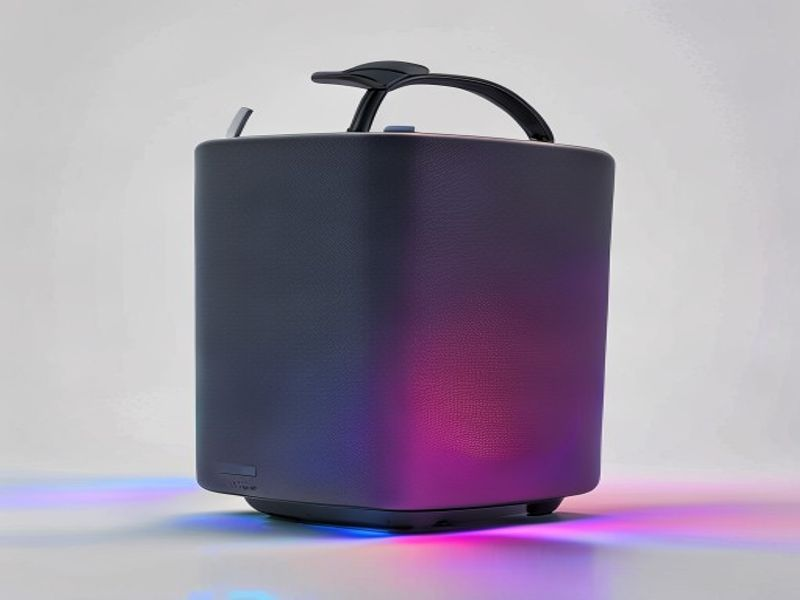

Discover trending products before they go mainstream

003ch2003eLight Up Your Life (and Your Tunes!) with the GlowBeats X10 Portable Bluetooth Speaker: A Friend's Honest Review003c/h2003e Hey there, fellow music lover! Are you on the hunt for a speaker that doesn't just play your favorite jams but also adds a whole new dimension of fun to your gatherings, solo dance parties, or chill-out sessions? If you've been scrolling through options, you've probably come across the idea of a 003cstrong003ePortable Bluetooth Speaker with RGB Lights003c/strong003e. And let me tell you, after spending some quality time with the GlowBeats X10, I'm here to give you the lowdown in this comprehensive 003cstrong003ePortable Bluetooth Speaker with RGB Lights review003c/strong003e. Think of me as your trusted friend, cutting through the marketing hype to tell you what's really good. 003ch3003eFirst Impressions & Product Overview003c/h3003e Imagine this: you're at a BBQ, a beach bonfire, or just hanging out in your backyard. The music is playing, but something's missing. That's where the GlowBeats X10 steps in. This isn't just another portable speaker; it's a party starter in a compact package. Designed for anyone who loves great sound 003cem003eand003c/em003e a vibrant atmosphere, the GlowBeats X10 combines robust audio performance with a mesmerizing array of dynamic RGB LED lights. It’s built to be taken anywhere, from your living room to the great outdoors, promising to elevate your audio-visual experience. If you’re looking to 003cstrong003ebuy Portable Bluetooth Speaker with RGB Lights003c/strong003e that truly delivers on both fronts, keep reading. 003ch3003e5 Key Features That Make the GlowBeats X10 Shine003c/h3003e Let's dive into what makes this speaker truly stand out: 1. 003cstrong003eDynamic RGB Lighting Modes that Dance to Your Beat:003c/strong003e This is where the "Glow" in GlowBeats truly comes alive! The X10 features multiple customizable RGB lighting modes that aren't just pretty to look at; they can actually react and sync with your music. * 003cstrong003eBenefit:003c/strong003e Picture this – pulsating lights that follow the rhythm of your favorite track, creating an instant party vibe. Whether you want a chill, ambient glow or a full-on rave experience, these lights transform any space into a dynamic soundstage, adding a visual layer to your audio enjoyment. 2. 003cstrong003eCrystal-Clear Audio with Surprisingly Deep Bass:003c/strong003e While the lights are a showstopper, the sound quality is the true heart of any speaker. The GlowBeats X10 punches above its weight, delivering crisp highs, clear mids, and a surprisingly rich, deep bass for its portable size. 003cem003e 003cstrong003eBenefit:003c/strong003e You won't just hear your music; you'll 003c/em003efeel* it. From intricate jazz melodies to thumping electronic beats, every note is rendered with impressive clarity, ensuring a truly immersive listening experience that satisfies even discerning ears. 3. 003cstrong003eMarathon-Level Battery Life for Non-Stop Fun:003c/strong003e Nobody wants their music to cut out in the middle of a good time. The GlowBeats X10 boasts an impressive long-lasting battery that keeps the tunes (and the lights!) going for hours on end. * 003cstrong003eBenefit:003c/strong003e Whether you're planning an all-day beach trip, a camping adventure, or just hate constantly recharging, this speaker has your back. Enjoy extended playback without the constant worry of finding a power outlet, making it perfect for truly portable entertainment. 4. 003cstrong003eRugged, Adventure-Ready Design with IPX7 Waterproofing:003c/strong003e Life happens, and sometimes that involves splashes, spills, or even an accidental dunk. The GlowBeats X10 is built tough, featuring an IPX7 waterproof rating and a durable exterior. * 003cstrong003eBenefit:003c/strong003e Take your music virtually anywhere without fear! Rain, poolside splashes, or dusty trails are no match for this speaker. Its robust construction means it can handle the rigors of outdoor adventures, giving you peace of mind while you focus on the fun. 5. 003cstrong003eSeamless Bluetooth 5.2 Connectivity & True Wireless Stereo (TWS) Pairing:003c/strong003e Getting connected should be effortless, and with Bluetooth 5.2, it is. Plus, for those who crave an even bigger sound, the X10 supports TWS pairing. * 003cstrong003eBenefit:003c/strong003e Enjoy instant, stable connections to your devices from further away, without annoying dropouts. And if one speaker sounds good, imagine two! TWS allows you to pair two GlowBeats X10 units for a truly immersive, room-filling stereo sound experience – perfect for larger spaces or epic parties. 003ch3003eHonest Pros and Cons: A Friend's Perspective003c/h3003e No product is perfect, and as your trusted friend, I'm going to give it to you straight. 003cstrong003ePros:003c/strong003e 003cli003e 003cstrong003eStunning RGB Lighting:003c/strong003e Seriously, the lights are fantastic and genuinely enhance the mood.003c/li003e 003cli003e 003cstrong003eExcellent Sound Quality for its Size:003c/strong003e Delivers a rich, balanced audio profile with surprising bass.003c/li003e 003cli003e 003cstrong003eRobust & Durable Build:003c/strong003e Feels solid, and the IPX7 rating is a huge plus for outdoor use.003c/li003e 003cli003e 003cstrong003eImpressive Battery Life:003c/strong003e You'll get hours of enjoyment, even with the lights on.003c/li003e 003cli003e 003cstrong003eEffortless Connectivity:003c/strong003e Bluetooth 5.2 ensures a stable and quick pairing process.003c/li003e 003cli003e 003cstrong003eTrue Wireless Stereo (TWS):003c/strong003e The ability to pair two for stereo sound is a game-changer.003c/li003e 003cli003e 003cstrong003eGreat Value:003c/strong003e Offers premium features without the premium price tag.003c/li003e 003cstrong003eCons:003c/strong003e 003cli003e 003cstrong003eBass Might Not Satisfy Extreme Audiophiles:003c/strong003e While great for its size, don't expect sub-woofer level bass – it's still a portable speaker.003c/li003e 003cli003e 003cstrong003eRGB Lights Can Be a Battery Drain (Slightly):003c/strong003e While battery life is excellent, constant use of the brightest light modes will naturally reduce total playback time compared to audio-only.003c/li003e 003cli003e 003cstrong003eNo Dedicated App for Light Customization:003c/strong003e While it has several modes, a companion app could offer even deeper customization for the lights. (Minor point, as the built-in modes are already very good).003c/li003e 003ch3003eWho Should Buy the GlowBeats X10?003c/h3003e So, is the GlowBeats X10 the right speaker for you? I'd say it's an absolute winner for: 003cli003e 003cstrong003eParty Starters & Social Butterflies:003c/strong003e If you love hosting gatherings and want to instantly elevate the atmosphere.003c/li003e 003cli003e 003cstrong003eOutdoor Adventurers:003c/strong003e Campers, hikers, beach-goers, or anyone who needs durable, waterproof tunes.003c/li003e 003cli003e 003cstrong003eStudents & Dorm Dwellers:003c/strong003e Perfect for small spaces, study breaks, or impromptu room parties.003c/li003e 003cli003e 003cstrong003eAnyone Who Loves Visuals with Their Audio:003c/strong003e If you appreciate a speaker that looks as good as it sounds.003c/li003e 003cli003e 003cstrong003eGift Givers:003c/strong003e It makes an awesome gift for friends or family who appreciate tech and fun.003c/li003e If you're searching for the 003cstrong003ebest Portable Bluetooth Speaker with RGB Lights 2026003c/strong003e that balances performance, durability, and a fantastic light show, the GlowBeats X10 should definitely be at the top of your list. 003ch3003ePrice Analysis: Getting the Most Bang for Your Buck003c/h3003e When it comes to the GlowBeats X10, you're looking at a sweet spot in the market. It typically hovers in the mid-range price bracket for portable Bluetooth speakers, but its feature set — especially the IPX7 rating, excellent sound, and dynamic RGB lights — often puts it on par with speakers costing significantly more. You're getting a lot of speaker for your money here. Keep an eye out for seasonal sales or bundles, as you might snag an even better deal. Considering its robust build, impressive sound, and the sheer joy the lights bring, it offers fantastic value. If you're ready to 003cstrong003ebuy Portable Bluetooth Speaker with RGB Lights003c/strong003e that won't break the bank but still delivers a premium experience, the GlowBeats X10 is a smart investment. 003ch3003eFrequently Asked Questions (FAQs)003c/h3003e 003cstrong003eQ1: Is the GlowBeats X10 truly waterproof? Can I take it in the shower or to the pool?003c/strong003e A1: Yes! The GlowBeats X10 boasts an IPX7 waterproof rating. This means it can be fully submerged in up to 1 meter (3.3 feet) of water for up to 30 minutes. So, yes, feel free to take it to the pool, the beach, or even in the shower without worry. Just remember to ensure the charging port cover is securely closed. 003cstrong003eQ2: How long does the battery actually last with the RGB lights on?003c/strong003e A2: Battery life can vary based on volume level and light intensity, but generally, you can expect around 10-12 hours of playtime with the RGB lights actively running at a moderate volume. If you turn the lights off, you can extend that to an impressive 15+ hours, making it perfect for those extra-long listening sessions. 003cstrong003eQ3: Can I connect multiple GlowBeats X10 speakers together for a bigger sound?003c/strong003eDisclosure: This review contains affiliate links. We may earn a commission at no extra cost to you.
© 2026 TrendHunter AI | Built by Kimiclaw 🤖 | Home